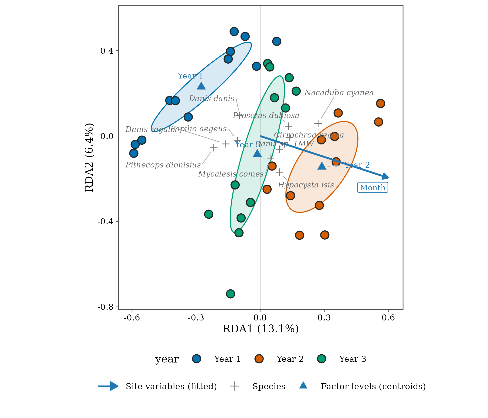

5. Community composition: ordination and tests
Source:vignettes/articles/guide-05-composition.Rmd
guide-05-composition.RmdDiversity numbers (Chapters 2-4) say how many species and how different sites are. Composition analyses say which species, and relate them to the environment. The usual workflow:
| Step | Question | Method | tidydiversity |
|---|---|---|---|
| 1 | What are the main patterns? | Ordination |
ord_fit(), autoplot()
|
| 2 | Do groups or gradients explain composition? | PERMANOVA | beta_permanova() |
| 3 | Is a difference in location or in spread? | Dispersion test | beta_dispersion() |
| 4 | Which species drive the difference? | Indicator species | beta_indicator() |
1. Ordination
The concept
A site-by-species table has as many dimensions as species. Ordination arranges sites (and species) in two dimensions so that similar sites lie close together, keeping as much of the original variation as possible.
| Method | Type | Distances | Use when |
|---|---|---|---|
| PCA | Unconstrained | Euclidean (on transformed data, e.g. Hellinger) | Short gradients, linear responses |
| CA / DCA | Unconstrained | Chi-square | Long gradients, unimodal species responses |
| NMDS | Unconstrained | Any (Bray-Curtis, Jaccard) | A robust picture with any dissimilarity |
| RDA | Constrained (linear) | Euclidean on transformed data | Testing how much environment explains |
| CCA | Constrained (unimodal) | Chi-square | Long gradients with environmental data |
Unconstrained ordination shows the main patterns in the species data alone. Constrained ordination (RDA, CCA) shows only the variation explained by your environmental variables, and lets you test them.
Butterflies at Wanang
Butterflies counted monthly in the Wanang forest dynamics plot, Papua New Guinea, over two years. Do composition differ between years and months?
butterflies <- mutate(wanang_butterflies, year = factor(paste("Year", year)))
rda <- ord_fit(butterflies, method = "rda", formula = ~ year + month)
rda
#> RDA of 36 sites and 189 species
#> Transformation: hellinger
#> Variation explained: RDA1 13.1%, RDA2 6.4%, RDA3 4.1%
#> Constrained: 23.6% of the total
ord_test(rda, by = "terms")
#> # A tibble: 3 × 5
#> term df variance statistic p.value
#> <chr> <dbl> <dbl> <dbl> <dbl>
#> 1 year 2 0.0336 3.18 0.001
#> 2 month 1 0.0185 3.51 0.001
#> 3 Residual 32 0.169 NA NA
autoplot(rda, colour = year, ellipse = "sd", species = 10)
How to read an ordination diagram.
- Points (samples) close together have similar species composition.
- Axes are the directions of greatest (explained) variation; the percentage on each axis is its share of the variance. In RDA the axes are combinations of the constraints.
- Arrows (species or variables) point towards samples where that species is more abundant or that variable is larger. Arrow length shows importance.
- Ellipses enclose about two-thirds of each group’s samples (one standard deviation).
- The test table says whether each constraint explains more variation than expected by chance (permutation test), and the proportion explained is the adjusted in the model summary.
Distances in a diagram are approximations: always report and interpret the numbers (variance explained, test results), not only the picture. The ordination article covers scaling, passive variables and customisation.
2. PERMANOVA
The concept
PERMANOVA (permutational multivariate analysis of variance; Anderson 2001) partitions the variation in a dissimilarity matrix among explanatory variables, like ANOVA does for one response. Significance comes from permuting samples, so no normality is assumed. is the proportion of compositional variation each term explains.
ants <- png_ants |>
mutate(
unit = paste(site, season, transect),
zone = if_else(elevation <= 700, "lowland", "montane")
)
perm <- beta_permanova(ants, site = unit, formula = ~ elevation + season)
knitr::kable(perm, digits = 3,
caption = "PERMANOVA of ant composition (Bray-Curtis) on elevation and season, 999 permutations."
)| term | df | sum_sq | r2 | statistic | p.value |
|---|---|---|---|---|---|
| elevation | 1 | 1.326 | 0.169 | 3.747 | 0.001 |
| season | 1 | 0.526 | 0.067 | 1.487 | 0.097 |
| Residual | 17 | 6.014 | 0.765 | NA | NA |
| Total | 19 | 7.866 | 1.000 | NA | NA |
Interpretation. Elevation explains 17 % of the variation in ant composition (p = 0.001); season explains 7 % and is not significant (p = 0.097). The residual 76 % is variation among transects not explained by these two terms, which is typical for communities.
3. Dispersion: location or spread?
PERMANOVA can be significant because groups differ in their centre (different species) or because they differ in spread (one group is more variable). The dispersion test (Anderson 2006) checks the second.
disp <- beta_dispersion(ants, site = unit, group = zone)
disp
#> Multivariate dispersion by zone
#> # A tibble: 20 × 3
#> unit zone distance
#> <chr> <fct> <dbl>
#> 1 MW0200 dry 1 lowland 0.551
#> 2 MW0200 dry 2 lowland 0.531
#> 3 MW0700 dry 1 lowland 0.620
#> 4 MW0700 dry 2 lowland 0.610
#> 5 MW1200 dry 1 montane 0.619
#> 6 MW1200 dry 2 montane 0.633
#> 7 MW1700 dry 1 montane 0.545
#> 8 MW1700 dry 2 montane 0.637
#> 9 MW2200 dry 1 montane 0.691
#> 10 MW2200 dry 2 montane 0.625
#> 11 MW0200 wet 1 lowland 0.513
#> 12 MW0200 wet 2 lowland 0.486
#> 13 MW0700 wet 1 lowland 0.595
#> 14 MW0700 wet 2 lowland 0.503
#> 15 MW1200 wet 1 montane 0.571
#> 16 MW1200 wet 2 montane 0.595
#> 17 MW1700 wet 1 montane 0.550
#> 18 MW1700 wet 2 montane 0.554
#> 19 MW2200 wet 1 montane 0.696
#> 20 MW2200 wet 2 montane 0.563
#>
#> Permutation test:
#> # A tibble: 2 × 5
#> term df sum_sq statistic p.value
#> <chr> <int> <dbl> <dbl> <dbl>
#> 1 Groups 1 0.0148 5.45 0.027
#> 2 Residuals 18 0.0488 NA NAInterpretation. Montane transects are somewhat more
variable in composition than lowland ones (the permutation test above).
When dispersion differs, part of a significant PERMANOVA result for
zone could reflect that difference in spread, not only a
shift in species; report both tests together.
4. Indicator species
The IndVal index (Dufrêne and Legendre 1997) finds species characteristic of a group: the product of specificity (A: the species is concentrated in that group) and fidelity (B: it occurs in most samples of that group). Significance is tested by permutation, and p-values are adjusted for testing many species.
beta_indicator(ants, site = unit, group = zone, adjust = "none", alpha = 1) |>
arrange(p.value) |>
head(8) |>
knitr::kable(Nonedigits = 3,
caption = "Species with the highest indicator values (unadjusted p-values)."
)| species | group | stat | A | B | p.value | p.adj |
|---|---|---|---|---|---|---|
| mono_002 | lowland | 0.7612788 | 0.9272727 | 0.6250000 | 0.010 | 0.010 |
| rhyt_001 | lowland | 0.7071068 | 1.0000000 | 0.5000000 | 0.011 | 0.011 |
| para_005 | lowland | 0.6123724 | 1.0000000 | 0.3750000 | 0.040 | 0.040 |
| care_007 | lowland | 0.6546537 | 0.8571429 | 0.5000000 | 0.052 | 0.052 |
| phei_003 | lowland | 0.6123724 | 1.0000000 | 0.3750000 | 0.054 | 0.054 |
| tetr_018 | lowland | 0.6123724 | 1.0000000 | 0.3750000 | 0.056 | 0.056 |
| oeco_001 | lowland | 0.6123724 | 1.0000000 | 0.3750000 | 0.060 | 0.060 |
| tetr_026 | montane | 0.6454972 | 1.0000000 | 0.4166667 | 0.082 | 0.082 |
Interpretation. These are the species most
associated with each zone. With 20 transects and many species,
none remains significant after adjusting for multiple
testing (the default beta_indicator() call returns
no species). Report them as candidate indicators that need confirmation
with more samples, not as established indicators.
How to report it
Ant composition was analysed with PERMANOVA on Bray-Curtis dissimilarities (999 permutations; Anderson 2001) using tidydiversity. Elevation explained 17 % of compositional variation (pseudo-F = 3.75, p = 0.001), while season had no significant effect. Multivariate dispersion differed between lowland and montane transects (Anderson 2006), so both location and spread contribute to the zonal differences.
References
Anderson, M. J. (2001). A new method for non-parametric multivariate analysis of variance. Austral Ecology, 26, 32-46.
Anderson, M. J. (2006). Distance-based tests for homogeneity of multivariate dispersions. Biometrics, 62, 245-253.
Dufrêne, M. and Legendre, P. (1997). Species assemblages and indicator species: the need for a flexible asymmetrical approach. Ecological Monographs, 67, 345-366.
Legendre, P. and Legendre, L. (2012). Numerical Ecology, 3rd edition. Elsevier.